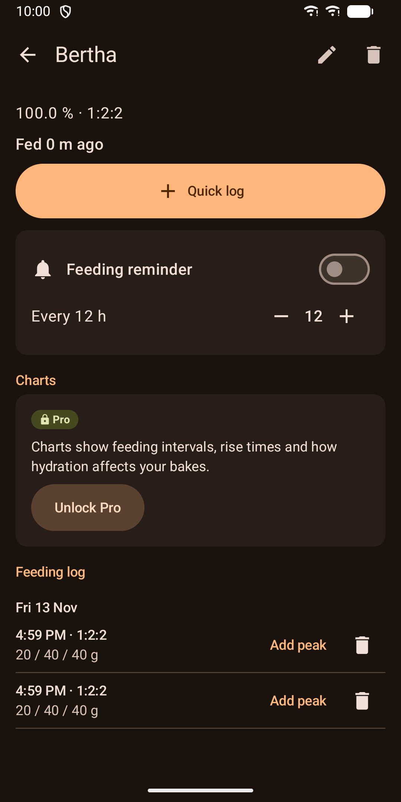
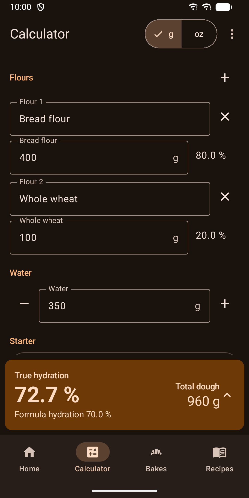

Sauerteig Hydrations-Journal
Backprozente, Anstellgut-Protokoll und Backjournal für Sauerteig daheim.





Über die App
Das Sauerteig Hydrations-Journal ist ein Küchenhelfer für Hobbybäcker. Es bietet einen Backprozente-Rechner, ein Fütterungsprotokoll für dein Anstellgut und ein Journal für jedes Brot. Echte Hydration Viele Rechner übersehen das Mehl und das Wasser im Anstellgut. Dieser zählt beides mit. Gib Mehle, Wasser, Anstellgut, Salz und Zutaten ein. Die Übersicht zeigt Teigmenge, Gesamtmehl, Gesamtwasser, echte Hydration und Formel-Hydration nebeneinander, dazu die Backprozente jeder Zutat. Markierst du eine Zutat wie Milch als „zählt als Wasser“, passen sich die Werte an. Skalieren Skaliere ein Rezept auf ein Zielgewicht für den Teig oder für das Mehl. Zwischen Gramm und Unzen kannst du jederzeit wechseln. Fütterungsprotokoll Trage eine Fütterung mit einem Tipp ein. Die App merkt sich dein übliches Verhältnis und das Gewicht des Anstellguts. Zur Wahl stehen 1:1:1, 1:2:2 und 1:5:5, oder du legst ein eigenes Verhältnis fest. Ergänze eine Notiz und den Zeitpunkt, an dem das Anstellgut seinen Höhepunkt erreicht hat. Erinnerungen Du bekommst eine Benachrichtigung, wenn gefüttert werden muss, im Abstand, den du für jedes Anstellgut wählst. Backjournal Starte einen Backvorgang aus einem Rezept. Die App speichert eine Kopie des Rezepts, sodass spätere Änderungen deinen Verlauf nicht verändern. Halte die Zeiten für Stockgare, Stückgare und Backen fest, bewerte das Brot von 1 bis 5 und schreibe Notizen. Küchentimer Ein Vollbild-Timer für Autolyse, Stockgare, Stückgare und Backen. Er läuft weiter, wenn du die App verlässt, und auch nach einem Neustart. Die Tasten sind groß genug für mehlige Hände. Widget für den Startbildschirm Sieh, wann die nächste Fütterung ansteht und wann der laufende Timer endet. Ein Tipp öffnet das Schnellprotokoll. Für die Küche gemacht Der Küchenmodus nutzt größere Schrift und hält im Rechner und im Timer den Bildschirm an. Helles und dunkles Design folgen deinem Telefon. Smartphones und Tablets werden unterstützt, auf großen Displays mit zwei Spalten. Beschriftungen für Screenreader sind enthalten. Die App gibt es auf Deutsch und Englisch. Deine Daten Es gibt kein Konto und kein Tracking. Die App fordert keine Internetberechtigung an, deine Daten bleiben auf deinem Gerät. Das Android-Cloud-Backup ist ausgeschaltet, du entscheidest also selbst, wohin Sicherungen gehen. Eine JSON-Sicherung kannst du jederzeit wiederherstellen. Pro Einige Funktionen brauchen Pro, einen einmaligen In-App-Kauf. Pro enthält: - Mehr als ein Anstellgut - Mehr als drei gespeicherte Rezepte - Ein Foto pro Backvorgang - Diagramme für Fütterungsabstände, Aufgehzeiten und Bewertung im Verhältnis zur Hydration - Export einer vollständigen JSON-Sicherung und von CSV-Protokollen Ohne Pro kannst du den Rechner, ein Anstellgut mit vollständigem Fütterungsprotokoll, drei Rezepte, beliebig viele Backvorgänge, den Timer, Erinnerungen, das Widget und die Wiederherstellung aus einer Sicherung nutzen.